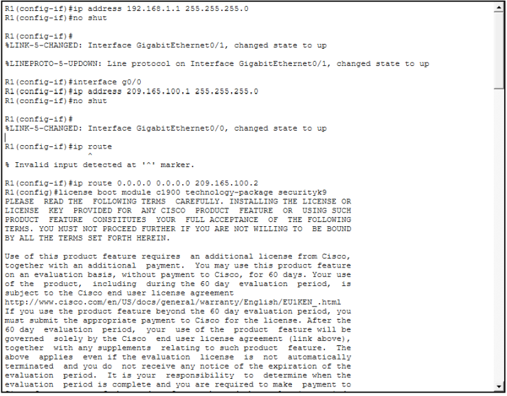
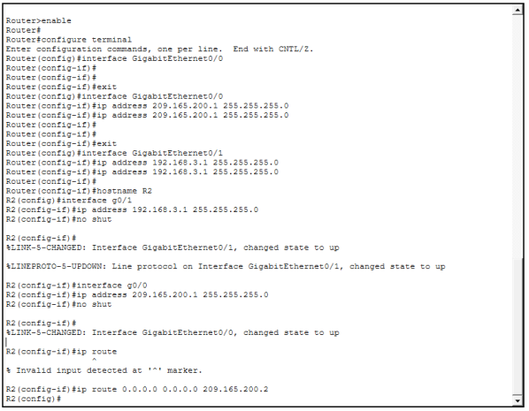
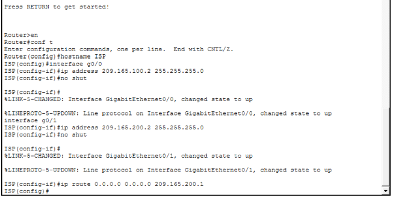
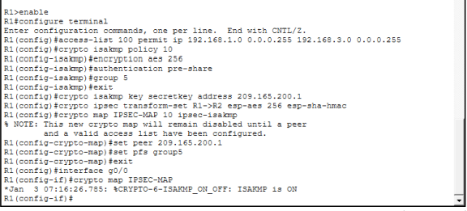
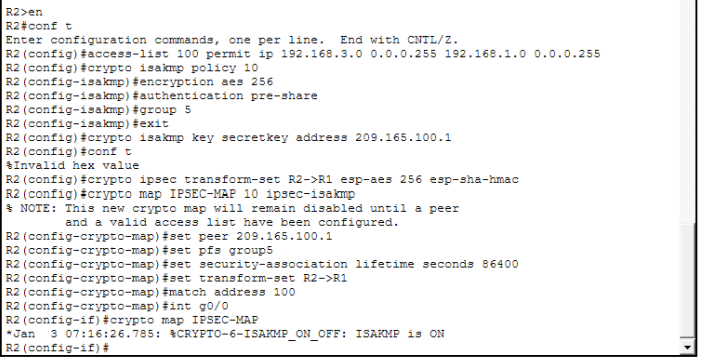
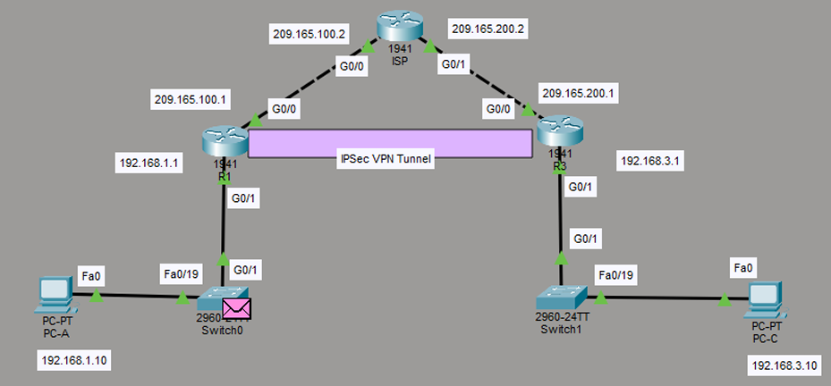

ACTIVIDAD 06 - IPsec y VPN
Carlos René Castillo Olvera – 182033Materia: Seguridad Informática (CNO V)
Fecha: 16/02/2026
Docente: Adolfo M.
Objetivo de la práctica
En esta practica se aprendió a crear una VPN IPsec Site-to-Site en Cisco Packet Tracer, conectando dos redes de manera segura a través de un túnel cifrado.
Descargar e instalar cisco packet tracer
Para la practica ocupamos descargar e instalar Cisco Packet Tracer, despues iniciar secion con correo y contraseña o si no tienes cuenta crear una.
> Link para descargar Cisco Packet Tracer.Video
Te puedes ir guiando de este video para hacer la práctica.
Paso 1: Conexiones de equipos
- PC0 a Switch0: Fa0 – Fa19
- Switch0 a R1: G0/1 - G0/1
- R1 a ISP: G0/0 – G0/0
- ISP a R2: G0/1 – G0/0
- R2 a Switch1: G0/1 – G0/1
- Switch1 a PC1: Fa10 – Fa0
Paso 2: Configurar IPs a los equipos
- PC0
- 192.168.1.10
- R1
- G0/1: 192.168.1.1
- G0/0: 209.165.100.1
- ISP
- G0/0: 209.165.100.2
- G0/1: 209.165.200.2
- R2
- G0/0: 209.165.200.1
- G0/1: 192.168.3.1
- PC1
- 192.168.3.10
Paso 3: Configurar R1
Los siguientes comandos se ponen uno por uno dentro del CLI de R1
enable
configure terminal
hostname R1
interface g0/1
ip address 192.168.1.1 255.255.255.0
no shutdown
exit
interface g0/0
ip address 209.165.100.1 255.255.255.0
no shutdown
exit
ip route 0.0.0.0 0.0.0.0 209.165.100.2
Ejemplo:
Paso 4: Configurar R2
Los siguientes comandos se ponen uno por uno dentro del CLI de R2
enable
configure terminal
hostname R2
interface g0/1
ip address 192.168.3.1 255.255.255.0
no shutdown
interface g0/0
ip address 209.165.200.1 255.255.255.0
no shutdown
ip route 0.0.0.0 0.0.0.0 209.165.200.2
Ejemplo:
Paso 5: Configurar ISP
Los siguientes comandos se ponen uno por uno dentro del CLI de ISP
enable
conf t
hostname ISP
interface g0/0
ip address 209.165.100.2 255.255.255.0
no shutdown
interface g0/1
ip address 209.165.200.2 255.255.255.0
no shutdown
ip route 0.0.0.0 0.0.0.0 209.165.200.1
Ejemplo:
Paso 6: Después a cada Router (R1, R2, ISP) hacemos lo siguiente en el CLI:
license boot module c1900 technology-package securityk9
copy running-config startup-config
reload
show versión
¿Qué paso aquí?
1. license boot module c1900 technology-package securityk9
Activa el paquete de seguridad del router. Habilita funciones como VPN, firewall e IPSec. En Packet Tracer
casi no cambia nada, pero en routers reales sí.
2. copy running-config startup-config
Guarda la configuración actual. Si no lo haces y reinicias el router, pierdes todo lo configurado.
3. reload
Reinicia el router. Si guardaste la configuración antes, se conserva. Si no, se pierde.
4. show version
Muestra información del router: versión del IOS, modelo, memoria, tiempo encendido y licencias activas. No
cambia nada, solo muestra datos.
Paso 7: En R1 ponemos los siguientes comandos:
enable
configure terminal
access-list 100 permit ip 192.168.1.0 0.0.0.255 192.168.3.0 0.0.0.255
crypto isakmp policy 10
encryption aes 256
authentication pre-share
group 5
exit
crypto isakmp key secretkey address 209.165.200.1
crypto ipsec transform-set R1->R2 esp-aes 256 esp-sha-hmac
crypto map IPSEC-MAP 10 ipsec-isakmp
set peer 209.165.200.1
set pfs group5
exit
interface g0/0
crypto map IPSEC-MAP
¿Qué hacen estos comandos?
- Activa el modo privilegiado (enable) y entra en la configuración global (configure terminal).
- Crea una lista de acceso 100 que permite el tráfico IP desde la red 192.168.1.0/24 hacia 192.168.3.0/24. Esto define qué tráfico se incluirá en la VPN.
- Configura una política ISAKMP (para negociar la VPN) con prioridad 10, usando cifrado AES de 256 bits, autenticación con clave compartida y grupo Diffie-Hellman 5.
- Define la clave precompartida ("secretkey") para el peer con IP 209.165.200.1.
- Crea un conjunto de transformaciones IPsec llamado "R1->R2" que usa AES-256 para cifrado y SHA para integridad.
- Configura un crypto map llamado IPSEC-MAP, que define al peer 209.165.200.1, activa Perfect Forward Secrecy (PFS) usando grupo 5 y aplica el conjunto de transformaciones.
- Aplica este crypto map a la interfaz GigabitEthernet 0/0 para que todo el tráfico permitido por la lista de acceso pase por la VPN.
Ejemplo:
Paso 8: En R2 ponemos los siguientes comandos:
en
conf t
access-list 100 permit ip 192.168.3.0 0.0.0.255 192.168.1.0 0.0.0.255
crypto isakmp policy 10
encryption aes 256
authentication pre-share
group 5
exit
crypto isakmp key secretkey address 209.165.100.1
conf t
crypto ipsec transform-set R2->R1 esp-aes 256 esp-sha-hmac
crypto map IPSEC-MAP 10 ipsec-isakmp
set peer 209.165.100.1
set pfs group5
set security-association lifetime seconds 86400
set transform-set R2->R1
match address 100
int g0/0
crypto map IPSEC-MAP
¿Qué hacen estos comandos?
- Crea una lista de acceso que define qué tráfico será enviado por la VPN, en este caso el tráfico entre la red 192.168.3.0/24 y la 192.168.1.0/24.
- Configura la política ISAKMP para negociar la VPN, usando cifrado AES de 256 bits, autenticación por clave compartida y grupo Diffie-Hellman 5 para el intercambio seguro de claves.
- Define la clave compartida “secretkey” para autenticarse con el peer cuya IP es 209.165.100.1.
- Crea un conjunto de transformaciones IPsec llamado R2->R1, usando AES-256 para cifrado y SHA para integridad de los datos.
- Configura un mapa de criptografía llamado IPSEC-MAP que especifica el peer, activa PFS con grupo 5, define la duración de la asociación de seguridad en 86400 segundos, aplica el conjunto de transformaciones y asocia la lista de acceso.
- Aplica el crypto map a la interfaz GigabitEthernet 0/0, activando así el túnel VPN para todo el tráfico que coincida con la lista de acceso.
Ejemplo:
Conclusión:
La práctica permitió configurar y verificar un túnel VPN IPsec site-to-site entre dos redes separadas (192.168.1.0/24 y 192.168.3.0/24) a través de un ISP simulado. Se logró que el tráfico entre PC0 y PC1 viajara de forma segura mediante cifrado AES-256 y autenticación SHA, usando ISAKMP para la negociación de claves, una clave precompartida y Perfect Forward Secrecy para proteger la confidencialidad y la integridad de los datos. Esto demuestra cómo se pueden interconectar redes remotas mediante VPN, asegurando que los paquetes solo sean accesibles para los dispositivos autorizados y que el tráfico no pueda ser interceptado
